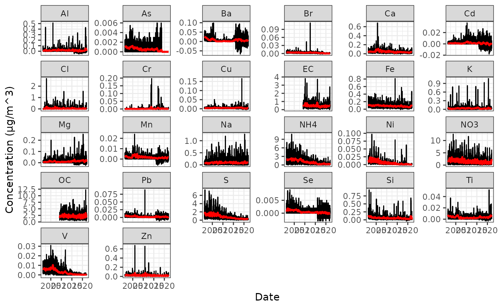

In this vignette, we will see how to leverage the functions in
pcpr to conduct an example air pollution source
apportionment analysis. We will use PCP to apportion speciated PM\(_{2.5}\) to its sources using the
queens dataset that comes with the pcpr R
package. The queens dataset consists of real chemical
concentrations (in µg/m\(^3\)) of 26
species of PM\(_{2.5}\) measured every
three to six days from 04/04/2001 through 12/30/2021 by an EPA AQS air
monitor located in Queens, New York City.
Let’s load and attach all the packages we will need for our analysis
into the current R session. We will also define a helper function
plot_matrix() to visualize our data as a heatmap.
library(pcpr)
suppressPackageStartupMessages({
library(dplyr) # for manipulation of queens
library(GGally) # for the ggcorr fn
library(ggplot2) # for plotting
library(lubridate) # for manipulating dates
library(magrittr) # for the pipe %>%
library(tidyr) # for pivoting queens for better plotting
})
plot_matrix <- function(D, ..., lp = "none", title = NULL) {
D <- t(D)
if (is.null(colnames(D))) colnames(D) <- paste0("C", 1:ncol(D))
data.frame(D) %>%
dplyr::mutate(x = paste0("R", 1:nrow(.))) %>%
tidyr::pivot_longer(
tidyselect::all_of(colnames(D)),
names_to = "y",
values_to = "value"
) %>%
dplyr::mutate(
x = factor(x, levels = unique(x)),
y = factor(y, levels = unique(y))
) %>%
ggplot(aes(x = x, y = y, fill = value)) +
geom_raster() +
scale_y_discrete(limits = rev) +
coord_equal() +
scale_fill_viridis_c(na.value = "white", ...) +
theme_minimal() +
theme(
axis.text.x = element_blank(),
axis.ticks.x = element_blank(),
axis.text.y = element_blank(),
axis.ticks.y = element_blank(),
axis.title.x = element_blank(),
axis.title.y = element_blank(),
legend.position = lp,
plot.margin = margin(0, 0, 0, 0),
aspect.ratio = 1
) +
ggtitle(title)
}Preprocessing
Exploring the raw data
We start by examining the raw queens data:
queens
#> # A tibble: 2,443 × 27
#> Date Al NH4 As Ba Br Cd Ca Cl
#> <date> <dbl> <dbl> <dbl> <dbl> <dbl> <dbl> <dbl> <dbl>
#> 1 2001-04-04 NA 1.62 NA NA NA NA NA NA
#> 2 2001-04-07 0 2.66 0 0.012 0.00488 0 0.0401 0.0079
#> 3 2001-04-13 0.0094 1.41 0.0016 0.024 0.00211 0.004 0.036 0
#> 4 2001-04-19 0.0104 1.22 0.001 0.006 0.00422 0 0.0543 0.003
#> 5 2001-04-25 0.0172 0.723 0.0024 0.015 0.00117 0 0.0398 0
#> 6 2001-05-01 0.0384 3.48 0.0017 0.041 0.00873 0.001 0.136 0
#> 7 2001-05-04 0.0964 6.22 0.0025 0.039 0.0111 0 0.137 0
#> 8 2001-05-07 0.004 0.233 0.001 0.016 0.00263 0 0.055 0.0054
#> 9 2001-05-10 0.0547 2.04 0.001 0.055 0.00521 0 0.121 0.001
#> 10 2001-05-13 0.0215 0.229 0 0.021 0.00122 0 0.0249 0
#> # ℹ 2,433 more rows
#> # ℹ 18 more variables: Cr <dbl>, Cu <dbl>, EC <dbl>, Fe <dbl>, Pb <dbl>,
#> # Mg <dbl>, Mn <dbl>, Ni <dbl>, OC <dbl>, K <dbl>, Se <dbl>, Si <dbl>,
#> # Na <dbl>, S <dbl>, Ti <dbl>, NO3 <dbl>, V <dbl>, Zn <dbl>Let’s visualize our data as a heatmap using the
plot_matrix() function we wrote above:
plot_matrix(queens[, 2:ncol(queens)])
Clearly the scale of each chemical differs widely. Let’s now visualize each of the measured chemical species as timeseries to get a better sense of what we’re dealing with. Plotted in black are the raw observed PM\(_{2.5}\) measurements (in µg/m\(^3\)) over time (04/04/2001 - 12/30/2021), and plotted in red are some (rough) lines of best fit:
queens %>%
pivot_longer(
colnames(queens)[-1],
names_to = "chem", values_to = "concentration"
) %>%
filter(!is.na(concentration)) %>%
ggplot(aes(x = Date, y = concentration)) +
geom_line() +
geom_smooth(color = "red", formula = "y ~ x", method = "loess", span = 0.05) +
facet_wrap(~chem, scales = "free_y") +
labs(x = "Date", y = "Concentration (µg/m^3)") +
theme_bw()
Some initial points to make note of, looking at the data:
- As we saw in the heatmap, the scale for each chemical’s measured concentration differs widely (e.g., NH4 ranges from 0 to 9 µg/m\(^3\), while Ti ranges from 0 to 0.04 µg/m\(^3\)). We will have to correct for this in a moment when we preprocess our data.
- Some chemical species record negative measurements (e.g., Al, Ba, Cd). As explained in the EPA AQS data documentation, this is due to idiosyncrasies in the instruments used to collect the measurements. We will zero out negative measurements during preprocessing.
- We can see strong seasonal trends in some species (e.g., NO3), as well as a reduction in concentration over time in others (e.g., Ni).
- Many species have prominent outliers, or extreme exposure events (e.g., Cr, Cu). Further, some species have extreme exposure events following seasonal trends, e.g., K.
- Elemental carbon (EC) and organic carbon (OC) are both missing measurements for the first 8 years of the dataset, likely because the air monitors for those two species were not operational from 2001 - 2009. Handling such systematic missingness is out of scope for this tutorial.
Below we remove the all measurements made before 2015, yielding the
queens_small dataset that we will use moving forward. We
make this decision because we have prior knowledge that in the years
leading up to 2015, gradually, many Midwestern coal-fired power plants
closed, reducing the regional / secondary signal experienced in downwind
Queens, NYC after 2015 (Hopke et
al. (2024)). We are interested in looking at the trends in the data
after this (soft) change.
start_date <- "2015-01-01"
queens_small <- queens %>% filter(Date >= as.Date(start_date))
queens_small
#> # A tibble: 838 × 27
#> Date Al NH4 As Ba Br Cd Ca Cl Cr
#> <date> <dbl> <dbl> <dbl> <dbl> <dbl> <dbl> <dbl> <dbl> <dbl>
#> 1 2015-01-03 0 0.439 0 0 0.003 0 0.0336 0.0168 0.005
#> 2 2015-01-06 0 1.2 0 0.005 0.0041 0 0.0522 0.0716 0
#> 3 2015-01-09 NA 0.911 NA NA NA NA NA NA NA
#> 4 2015-01-12 0.014 1.21 0.001 0.016 0.0075 0 0.0651 0.134 0
#> 5 2015-01-15 0.016 2.28 0 0.012 0.0054 0 0.0798 0.142 0
#> 6 2015-01-18 0 0.365 0 0.001 0.002 0 0.0569 0.159 0
#> 7 2015-01-21 0 0.496 0 0 0.0027 0 0.0334 0.0428 0
#> 8 2015-01-24 0 1.66 0 0 0.0046 0.007 0.0293 0.0275 0
#> 9 2015-01-27 0 0.281 0 0 0.001 0 0.0298 0.0325 0
#> 10 2015-01-30 0.005 1.07 0 0.017 0.0018 0 0.0614 0.0633 0.003
#> # ℹ 828 more rows
#> # ℹ 17 more variables: Cu <dbl>, EC <dbl>, Fe <dbl>, Pb <dbl>, Mg <dbl>,
#> # Mn <dbl>, Ni <dbl>, OC <dbl>, K <dbl>, Se <dbl>, Si <dbl>, Na <dbl>,
#> # S <dbl>, Ti <dbl>, NO3 <dbl>, V <dbl>, Zn <dbl>Next, let’s take a look at the correlation structure of our raw
queens_small data:
ggcorr(
queens_small[, 2:ncol(queens_small)],
method = "pairwise.complete.obs",
limits = FALSE, label = FALSE, size = 5
)
The noisy measurements and high dimensionality of our
queens_small air pollution mixture matrix gives rise to
this relatively complex correlation matrix. No strong patterns jump out
right away here. We’d like to employ PCP in order to reduce the
complexity of our data - handling noise and outliers - for more robust
downstream analysis. Keep this correlation matrix in mind, since after
applying PCP, we’ll examine the correlation matrix of the recovered
L matrix and compare.
Data standardization
Before we are able to run PCP, we need to first preprocess our data
for better numerical stability. Despite making minimal
assumptions of input data, PCP converges in practice
much more quickly when the data has been standardized in some way. The
goal is to rescale the data so columns are of comparable scale
without meaningfully altering the original distributions of the
columns. Let’s examine the distributions as they are in the
queens_small dataset:
queens_small %>%
pivot_longer(
colnames(queens_small)[-1],
names_to = "chem", values_to = "concentration"
) %>%
filter(!is.na(concentration)) %>%
ggplot(aes(x = concentration)) +
geom_histogram(bins = 50) +
theme_bw() +
facet_wrap(~chem, scales = "free")We have many choices for how we’d like to preprocess our data, e.g., standardize the data, min-max normalization, etc. Most of our data appears normal, log normal, or exponential. Here we choose to scale (but not center) each PM\(_{2.5}\) species in our dataset (we also choose to set all negative measurements to 0 for better interpretability):
queens_scaled <- queens_small %>% select(-Date)
queens_scaled[queens_scaled < 0] <- 0
queens_scaled <- data.frame(scale(queens_scaled, center = FALSE))
queens_scaled$Date <- queens_small$DateThe new (scaled) distributions are now:
queens_scaled %>%
pivot_longer(
colnames(queens_small)[-1],
names_to = "chem", values_to = "concentration"
) %>%
filter(!is.na(concentration)) %>%
ggplot(aes(x = concentration)) +
geom_histogram(bins = 50) +
theme_bw() +
facet_wrap(~chem, scales = "free")
That’s all there is to our preprocessing! Now we can turn our attention to PCP.
Principal component pursuit
Model selection
There are two PCP algorithms shipped with pcpr: the
convex root_pcp() [Zhang
et al. (2021)] and non-convex rrmc() [Cherapanamjeri
et al. (2017)].
rrmc() is best suited for data characterized by slowly
decaying singular values, indicative of complex underlying patterns and
a relatively large degree of noise. Most EH data can be described this
way. root_pcp() is best for data characterized by rapidly
decaying singular values, indicative of very well-defined latent
patterns.
To figure out which model would be best for our data, let’s inspect
the singular values of our observed mixture using the
sing() method. While PCP can handle NA values,
sing() cannot, so we quickly impute missing values with the
corresponding column mean via the impute_matrix()
function:
D <- as.matrix(queens_scaled %>% select(-Date))
D_imputed <- impute_matrix(D, apply(D, 2, mean, na.rm = TRUE))
singular_values <- sing(D_imputed)
plot(singular_values, type = "b")These singular values slowly decay, corroborating the relatively
complex underlying low-rank structure obscured by a high degree of noise
we saw in the correlation matrix earlier. As such, we will move forward
with rrmc() as our PCP model.
Grid search for parameter tuning
To estimate the low-rank and sparse matrices L and
S, rrmc() needs to be given a maximum rank to
search up to r and regularization parameter
eta. To determine the optimal values of r and
eta, we will conduct a brief grid search using the
grid_search_cv() function.
Recall that rrmc() uses an incremental rank-based
procedure in recovering L and S: First, a
rank-\(1\) model \((L^{(1)}, S^{(1)})\) is estimated. The
rank-\(1\) model is then used as an
initialization point to construct a rank-\(2\) model \((L^{(2)}, S^{(2)})\), and so on, until the
desired rank-r model \((L^{(r)},
S^{(r)})\) is recovered. All models from ranks \(1\) through \(r\) are returned by rrmc() in
this way. As such, we can fix the rank r in our gridsearch
to be the maximum rank we would like to search up to. Here we’ve chosen
\(r = 8\), since we do not expect more
than 8 distinct sources to govern queens PM\(_{2.5}\) data from 2015-2021 (based on
prior studies suggesting ~5 sources would perhaps be more
reasonable).
We also need to tune the eta parameter, ensuring we also
cover the rough default value obtained via the
get_pcp_defaults(). The eta parameter can be
thought of as a dial controlling the interplay between the low-rank
L and sparse S models. Larger values of
eta will place a greater emphasis on penalizing the
non-zero entries in S over penalizing the errors between
the predicted and observed data (the dense noise \(Z\)).
Note that this time we do not need to impute the data with chemical
means, since we would like rrmc() to recover missing
NA values using the low-rank structure present in the
data.
eta_0 <- get_pcp_defaults(D)$eta
# to get progress bar, could wrap this
# in a call to progressr::with_progress({ gs <- grid_search_cv(...) })
gs <- grid_search_cv(
D,
pcp_fn = rrmc,
grid = data.frame(eta = 10^seq(-1, 2, 1) * round(eta_0, 3)),
r = 8,
parallel_strategy = "multisession",
num_workers = 16,
verbose = FALSE
)
r_star <- gs$summary_stats$r[1]
eta_star <- round(gs$summary_stats$eta[1], 3)
gs$summary_stats#> # A tibble: 32 × 7
#> eta r rel_err L_rank S_sparsity iterations run_error_perc
#> <dbl> <int> <dbl> <dbl> <dbl> <dbl> <chr>
#> 1 0.1 4 0.732 4 0.993 NaN 0%
#> 2 0.1 3 0.733 3 0.995 NaN 0%
#> 3 0.1 2 0.752 2 0.993 NaN 0%
#> 4 0.1 1 0.756 1 0.991 NaN 0%
#> 5 1 1 0.756 1 1 NaN 0%
#> 6 1 2 0.760 2 1 NaN 0%
#> 7 1 3 0.805 3 1 NaN 0%
#> 8 0.01 7 0.806 1 0.173 NaN 0%
#> 9 0.01 8 0.806 1 0.173 NaN 0%
#> 10 0.01 5 0.806 1 0.173 NaN 0%
#> # ℹ 22 more rowsThe results from the search suggest a rank 4 solution with an
eta of 0.1 is most optimal, with the lowest average
relative recovery error on the held out test sets (73.2% relative
error). This solution yields a sparse matrix S with a
sparsity of 99.3%, meaning 0.7% of values in the data were flagged as
extreme, outlying exposure events. As such, we will use these parameters
moving forward.
Running PCP
Now we can run our PCP model!
pcp_model <- rrmc(D, r = r_star, eta = eta_star)
L <- pcp_model$L
S <- pcp_model$SWe can inspect the evolution of the objective function over the course of PCP’s optimization:
plot(pcp_model$objective, type = "l")The recovered L matrix
And the output L matrix:
plot_matrix(L)
L_rank <- matrix_rank(L)
L_rank
#> [1] 4Recall the original correlation matrix for queens_small
was:
ggcorr(
queens_small[, 2:ncol(queens_small)],
method = "pairwise.complete.obs",
limits = FALSE, label = FALSE, size = 5
)
The new correlation matrix for the recovered L matrix is
now:
L_df <- data.frame(L)
colnames(L_df) <- colnames(queens[, 2:ncol(queens)])
ggcorr(
L_df,
method = "pairwise.complete.obs",
limits = FALSE, label = FALSE, size = 5
)
As we can see, PCP successfully reduced the dimensionality of the data. The underlying correlation structure is now made much more explicit.
The recovered S matrix
Let’s briefly inspect PCP’s estimate of the sparse matrix
S and the associated sparsity via
sparsity():
plot_matrix(S)We can examine which chemicals have the largest number of outlying
exposure events by calculating the sparsity of each column in
S:
S_df <- data.frame(S)
colnames(S_df) <- colnames(queens_small[, 2:ncol(queens_small)])
chems_w_most_extreme_events <- sort(apply(S_df, 2, function(x) sparsity(as.matrix(x))))
chems_w_most_extreme_events
#> As V Se Cd Cr Mn Br Ni
#> 0.9463007 0.9570406 0.9630072 0.9832936 0.9856802 0.9868735 0.9892601 0.9904535
#> Cu K Mg Ba Zn EC S Ca
#> 0.9928401 0.9928401 0.9940334 0.9952267 0.9952267 0.9964200 0.9964200 0.9976134
#> Cl Fe Pb OC Ti Al Na NH4
#> 0.9976134 0.9976134 0.9976134 0.9976134 0.9976134 0.9988067 0.9988067 1.0000000
#> Si NO3
#> 1.0000000 1.0000000Here we can see ammonium (NH4), silicon (Si), and nitrate (NO3) have no extreme exposure events, since they have a sparsity of 100%. Arsenic (As), vanadium (V), and selenium (Se) have the greatest number of outlying events. We can also examine the extreme events for an individual chemical. Let’s check out the sparse events isolated for potassium (K), associated with biomass burning and fireworks.
S_df %>%
select(K) %>%
mutate(Date = queens_small$Date) %>%
filter(K > 0)
#> K Date
#> 1 9.427762 2015-07-05
#> 2 3.064908 2017-06-03
#> 3 12.804711 2018-07-04
#> 4 5.698263 2020-06-20
#> 5 14.986152 2020-07-05
#> 6 4.566127 2021-02-24PCP was able to pick up extreme potassium events around the July 4th
holiday for each of the July 4th / 5th dates available in the dataset
(recall that chemical concentrations are recorded in queens
every three to six days, skipping measurements on July 4th / 5th some
years).
We’re now ready to finish the source apportionment using the
estimated low-rank L matrix.
PCP and NMF for source apportionment
We will use Non-negative Matrix Factorization (NMF) to extract the
patterns (loadings) and corresponding scores encoded in the
L matrix. See NMF::nmf() for details.
Since we determined L to be of rank 4 from PCP’s grid
search, we no longer need to worry about what rank to use for our NMF
step, nor do we need to manually remove outliers, since PCP autonomously
isolated those into the sparse matrix S.
library(NMF)
nmf_mat <- L
nmf_mat[nmf_mat < 0] <- 0
res <- nmf(
nmf_mat,
rank = L_rank,
method = "offset", nrun = 30,
seed = 0, .opt = "vp16"
)
raw_scores <- basis(res)
raw_loadings <- coef(res)PCP-NMF Loadings
Let’s inspect the loadings obtained from our PCP-NMF model:
loadings <- data.frame(raw_loadings)
colnames(loadings) <- colnames(L_df)
loadings[["Pattern"]] <- paste("Pattern", 1:L_rank)
loadings %>%
pivot_longer(-Pattern, names_to = "Chemical", values_to = "Loading") %>%
ggplot(aes(x = Chemical, y = Loading)) +
geom_point(size = 2) +
geom_segment(aes(yend = 0, xend = Chemical), linewidth = 1) +
facet_wrap(~Pattern, scales = "free_x") +
theme_bw() +
theme(
strip.text.x = element_text(size = 12),
title = element_text(size = 16),
legend.position = "none",
axis.text.x = element_text(angle = 45, hjust = 1, size = 10),
strip.background = element_rect(fill = "white"),
axis.title.x = element_blank(),
axis.title.y = element_blank()
) +
geom_hline(yintercept = 0, linewidth = 0.2) +
ggtitle("PCP-NMF Loadings")
- Pattern 1 appears to be linked to traffic and road-related sources, characterized by elements such as barium (Ba), calcium (Ca), and lead (Pb), indicating emissions from brake wear, tire wear, and construction activities
- Pattern 2 looks like crustal dust, marked by elements like aluminum (Al), calcium (Ca), silicon (Si), titanium (Ti), and iron (Fe), suggesting resuspension of natural materials from soil and rock.
- Pattern 3 is clearly salt, including sodium chloride (NaCl) and magnesium chloride (MgCl2).
- Pattern 4 represents a mix of regional/secondary sources and traffic/tailpipe emissions, characterized by sulfur (S), ammonium (NH4), nitrate (NO3), organic carbon (OC), and zinc (Zn). This pattern lacks a clear regional signal and suggests contributions from both regional/secondary sources and tailpipe emissions.
Variance Explained
Let’s calculate the variance explained by each of the patterns using the pattern scores next. We will then reorder the patterns to appear according to their proportion of variance explained.
nmf_scores <- data.frame(raw_scores)
colnames(nmf_scores) <- c(
"Traffic", "Crustal Dust", "Salt", "Regional/Secondary & Tailpipe Emissions"
)
nmf_sources <- nmf_scores %>%
mutate(Date = queens_scaled$Date) %>%
pivot_longer(-Date, names_to = "Pattern", values_to = "Score")
var_explained <- nmf_sources %>%
group_by(Pattern) %>%
summarize(patsum = sum(Score)) %>%
mutate(VarianceExplained = round(100 * patsum / sum(patsum), 1)) %>%
select(-patsum) %>%
arrange(desc(VarianceExplained)) %>%
mutate(PatName = paste(Pattern, paste0("(", VarianceExplained, "% Var Exp)")))
nmf_sources <- nmf_sources %>%
mutate(
Pattern = factor(
Pattern,
levels = as.character(var_explained$Pattern),
labels = as.character(var_explained$PatName)
)
)
var_explained %>% select(-PatName)
#> # A tibble: 4 × 2
#> Pattern VarianceExplained
#> <chr> <dbl>
#> 1 Regional/Secondary & Tailpipe Emissions 34.7
#> 2 Traffic 30.6
#> 3 Crustal Dust 20.5
#> 4 Salt 14.2Loadings replotted
We can now replot the loadings with the proper pattern names:
loadings %>%
mutate(Pattern = factor(
colnames(nmf_scores),
levels = as.character(var_explained$Pattern),
labels = as.character(var_explained$PatName)
)) %>%
pivot_longer(-Pattern, names_to = "Chemical", values_to = "Loading") %>%
ggplot(aes(x = Chemical, y = Loading, color = Pattern)) +
scale_color_brewer(palette = "Set1") +
geom_point(size = 2) +
geom_segment(aes(yend = 0, xend = Chemical), linewidth = 1) +
facet_wrap(~Pattern, scales = "free_x") +
theme_bw() +
theme(
strip.text.x = element_text(size = 12),
title = element_text(size = 16),
legend.position = "none",
axis.text.x = element_text(angle = 45, hjust = 1, size = 10),
strip.background = element_rect(fill = "white"),
axis.title.x = element_blank(),
axis.title.y = element_blank()
) +
geom_hline(yintercept = 0, linewidth = 0.2) +
ggtitle("PCP-NMF Loadings")
PCP-NMF Scores
We can also examine the PCP-NMF scores over time:
yr_num <- length(unique(year(nmf_sources$Date)))
ggplot(nmf_sources, aes(Date, Score, color = Pattern)) +
scale_color_brewer(palette = "Set1") +
geom_smooth(method = "loess", span = 0.05) +
facet_wrap(~Pattern, scales = "free", ncol = 1) +
xlab("") +
ylab("Pattern Score") +
theme_classic() +
theme(
legend.position = "none",
title = element_text(size = 18),
axis.title.y = element_text(size = 18),
strip.text = element_text(size = 14),
axis.text.x = element_text(size = 13),
axis.text.y = element_text(size = 11)
) +
scale_x_date(date_labels = "%Y", date_breaks = "1 year") +
ggtitle("PCP-NMF Scores over Time")
#> `geom_smooth()` using formula = 'y ~ x'
These PCP-NMF derived chemical loadings and scores can now be paired with health outcomes of interest in any downstream analyses.
Conclusion
We paired PCP with NMF for the source apportionment of the
queens PM\(_{2.5}\)
dataset from 2015 - 2021. We used the non-convex PCP algorithm
rrmc() to interrogate the mixture of chemicals with
solutions of many different ranks. To determine the optimal rank
r and regularization parameter eta we
conducted a cross-validated grid search, exploring various combinations
of plausible rank values. This approach allowed us to cover a broad
spectrum of potential patterns. We then applied NMF to PCP’s recovered
L matrix, extracting chemical loadings and scores. Four
interpretable and reproducible sources of PM\(_{2.5}\) exposure were identified. These
patterns, along with PCP’s S matrix containing unique
outlying exposure events, can be paired with health outcomes of interest
in any downstream epidemiological analyses.